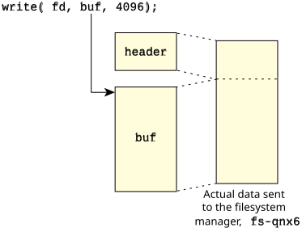
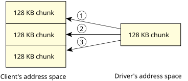

So far you've seen the basic message-passing primitives. As I mentioned earlier, these are all that you need. However, there are a few extra functions that make life much easier.
Let's consider an example using a client and server where we might need other functions.
The client issues a MsgSend() to transfer some data to the server. After the client issues the MsgSend(), it blocks; it's now waiting for the server to reply.
write (fd, buf, 16);
This works as expected if the server does a MsgReceive() and specifies a buffer size of, say, 1024 bytes. Since our client sent only a tiny message (28 bytes), we have no problems.
write (fd, buf, 1000000);
How is the server going to gracefully handle this? We could, arbitrarily, say that the client isn't allowed to write more than n bytes. Then, in the client-side C library code for write(), we could look at this requirement and split up the write request into several requests of n bytes each. This is awkward.
The other problem with this example would be, How big
should n be?
You can see that this approach has major disadvantages:
Luckily, this problem has a fairly simple workaround that also gives us some advantages.
Two functions, MsgRead() and MsgWrite(), are especially useful here. The important fact to keep in mind is that the client is blocked. This means that the client isn't going to go and change data structures while the server is trying to examine them.
#include <sys/neutrino.h>
ssize_t MsgRead( int rcvid,
void *msg,
size_t nbytes,
size_t offset );
MsgRead() lets your server read data from
the blocked client's address space, starting offset bytes from the beginning
of the client-specified send
buffer, into
the buffer specified by msg for nbytes.
The server doesn't block, and the client doesn't unblock.
MsgRead() returns the number of bytes it actually read,
or -1 if there was an error.
So let's think about how we'd use this in our write() example. The C Library write() function constructs a message with a header that it sends to the filesystem server, fs-qnx6. The server receives a small portion of the message via MsgReceive(), looks at it, and decides where it's going to put the rest of the message. The fs-qnx6 server may decide that the best place to put the data is into some cache buffers it's already allocated.
Let's track an example:

// part of the headers, fictionalized for example purposes
struct _io_write {
uint16_t type;
uint16_t combine_len;
uint32_t nbytes;
uint32_t xtype;
};
typedef union {
uint16_t type;
struct _io_read io_read;
struct _io_write io_write;
...
} header_t;
header_t header; // declare the header
rcvid = MsgReceive (chid, &header, sizeof (header), NULL);
switch (header.type) {
...
case _IO_WRITE:
number_of_bytes = header.io_write.nbytes;
...
MsgRead (rcvid, cache_buffer [index].data,
cache_buffer [index].size, sizeof (header.io_write));
Notice that the message transfer has specified an offset of sizeof (header.io_write) in order to skip the write header that was added by the client's C library. We're assuming here that cache_buffer [index].size is actually 4096 (or more) bytes.
#include <sys/neutrino.h>
ssize_t MsgWrite (int rcvid,
const void *msg,
size_t nbytes,
size_t offset);
MsgWrite()
lets your server write data to
the client's address space, starting offset bytes from the beginning
of the client-specified receive
buffer.
This function is most useful in cases where the server has
limited space but the client wishes to get a lot of information from the server.
For example, with a data acquisition driver, the client may specify a 4-megabyte data area and tell the driver to grab 4 megabytes of data. The driver really shouldn't need to have a big area like this lying around just in case someone asks for a huge data transfer.
The driver might have a 128 KB area for DMA data transfers, and then message-pass it piecemeal into the client's address space using MsgWrite() (incrementing the offset by 128 KB each time, of course). Then, when the last piece of data has been written, the driver will MsgReply() to the client.

MsgReply (rcvid, EOK, NULL, 0);or wake up the client after writing a header at the start of the client's buffer:
MsgReply (rcvid, EOK, &header, sizeof (header));
This is a fairly elegant trick for writing unknown quantities of data, where you know how much data you wrote only when you're done writing it. If you're using this method of writing the header after the data's been transferred, you must remember to leave room for the header at the beginning of the client's data area!